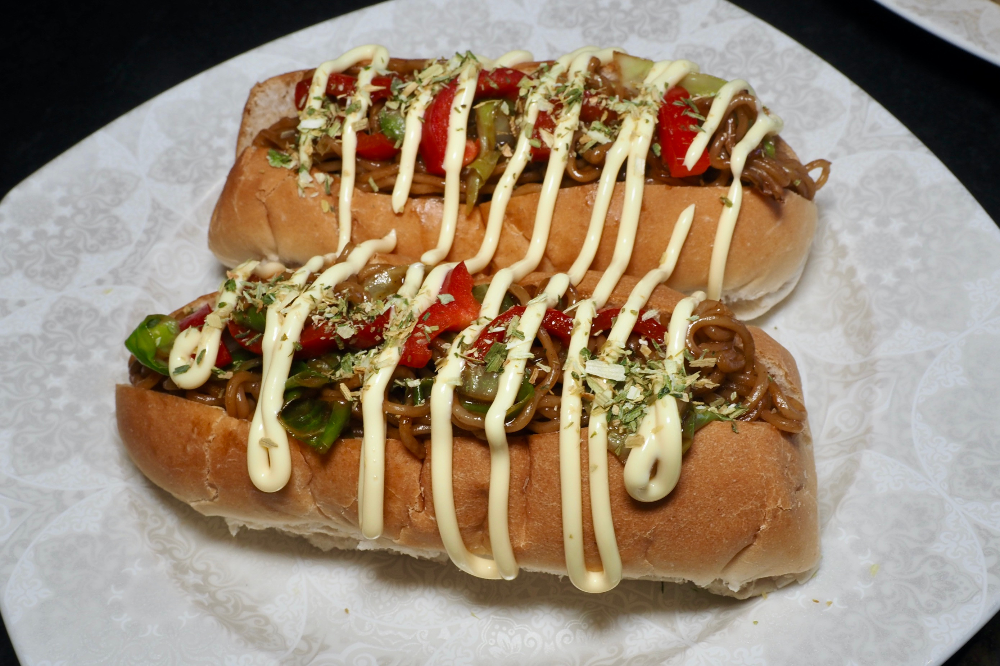

Yakisoba Pan

Description
Yaki Soba Pan was one of my fvourite snacks on the way home from high school in the 60s and 70s. They've not only stood the test of time but are probably more popular now than they were when I was in my teens. There's a reason for that - just make then and see!
Ingredients
- 4 hotdog rolls
- 1 packet instant yakisoba noodle
- 1 large sweet pointed cabbage leaf
- a small piece of red bell pepper about 2 in / 5 cm long
- 1 - 1.5 tbsp Bulldog sauce or yakisoba sauce
- 250ml water (or according to the instructions on the packet)
- some mayo for a final drizzle
Steps
- slice the hot dog rolls down the middles but make sure you don't cut all the way through
- cut the cabbage leaf in half. remove the thick midvein, then roll up and shred
- slice the pepper into small rectangular pieces
- to make the yakisoba noodles, boil bring water to the boil in a frying pan
- add the instant noodles and the shredded cabbage to the pan
- cook for 2 - 3 mins or until the water is mostly absorbed into the noodles
- add the sachet of sauce from the packet, the chopped pepper and the Bulldog brown sauce and stir fry for about 1 minute
- lay your 4 hotdog rolls on a plate or chopping board. carefully fill the rolls with about a quarter of the yakisoba noodles each
- finally, drizzle over some mayonnasie and the seasoning from the instant noodle packet
Credits
kurumicooks
Home